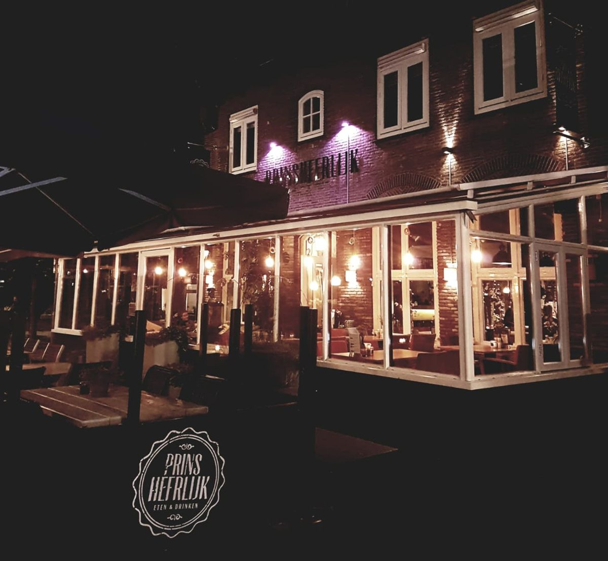
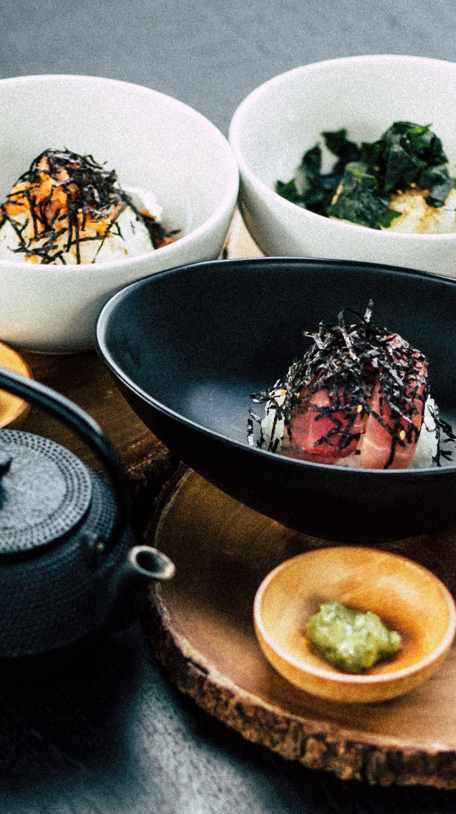
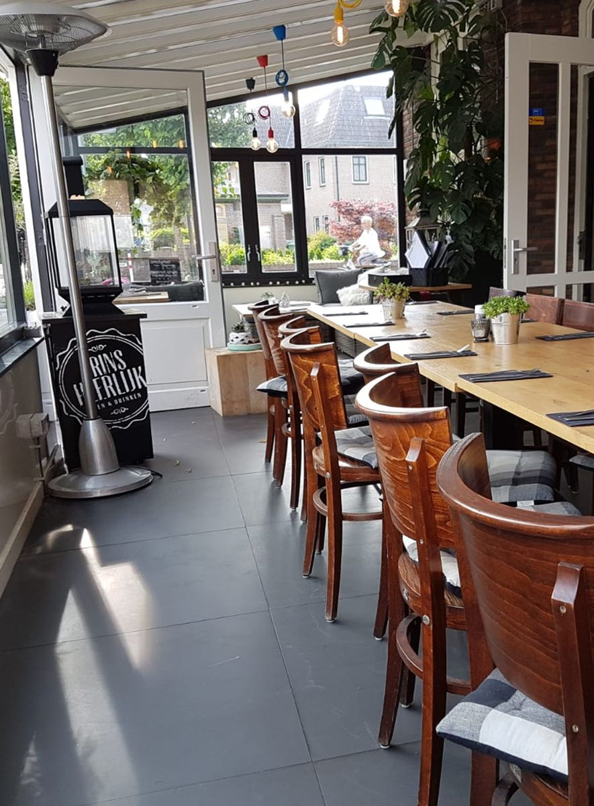

Gezellig eetcafé aan het historische Plein 1940
Een majestueuze lunch of uitgebreid diner, speciaalbier en goedgevulde borrelplanken. Buiten op het zonnige terras of binnen bij de knusse open haard, met uitzicht op de grote kerk.
Simon is een geboren en getogen Scherpenzeler. Op zijn vijftiende begon hij in de spoelkeuken, werkte zich op via de bediening tot bedrijfsleider en nam Prinsheerlijk op 1 april 2023 over. Zijn motto: hard werken, hard genieten. Het menu wordt regelmatig vernieuwd, van Franse cuisine tot echte klassiekers, altijd met dagverse producten.
Op deze plek komt jullie eigen korte bedrijfsvideo: de sfeer, de keuken en de mensen van Prinsheerlijk Eten & Drinken in één oogopslag. Perfect voor bovenaan de website, Instagram, Facebook en Google.


